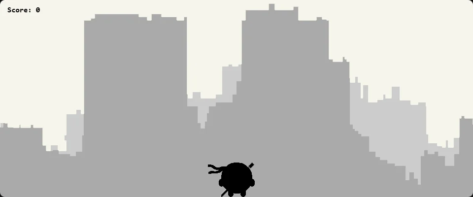

NinjaDonut: The Game

It needs a keyboard.
Controls
- ← →
- Move
- ↑
- Jump
- ↓
- Go invisible
- X
- Throw a ninja star
- Z
- Use the sword
The very serious donut from NinjaDonut, in a game of his own. Enemy donuts run in from both sides of the city, one after another with no end; take them out with ninja stars and the sword to rack up points, or duck out of sight.
This is my original Greenfoot code, playing just as I left it. On a phone it will load, but you'll need a keyboard to play.